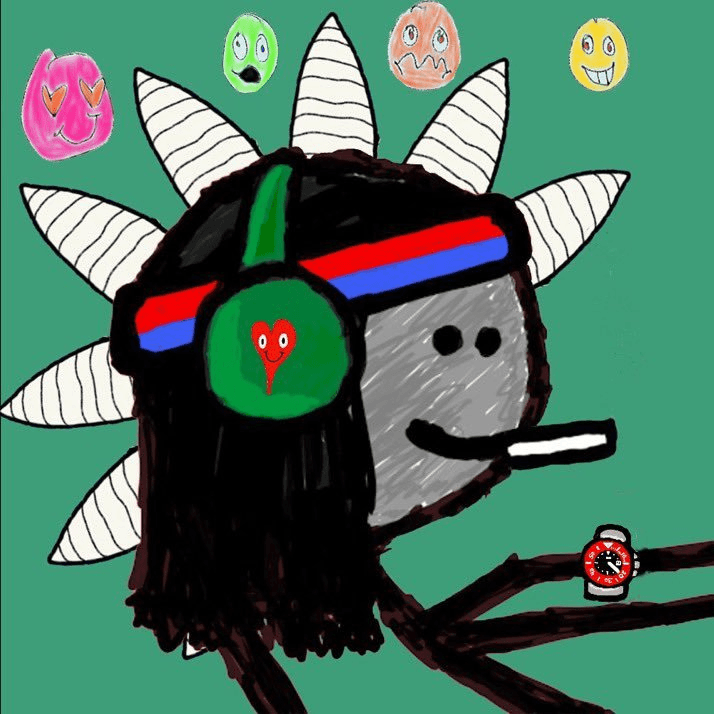

Garden Mfers

888 garden mfers constructed from OG community members of Brain Vomits Garden and Mfers.
This project is aimed to grow and support MFers, BRAiN VOMiT and other associated communities.
Every trait you see on the garden mfers is owned by the founders and some OG supporters.
It’s all about to supporting real artists and growing their communities.
MINT